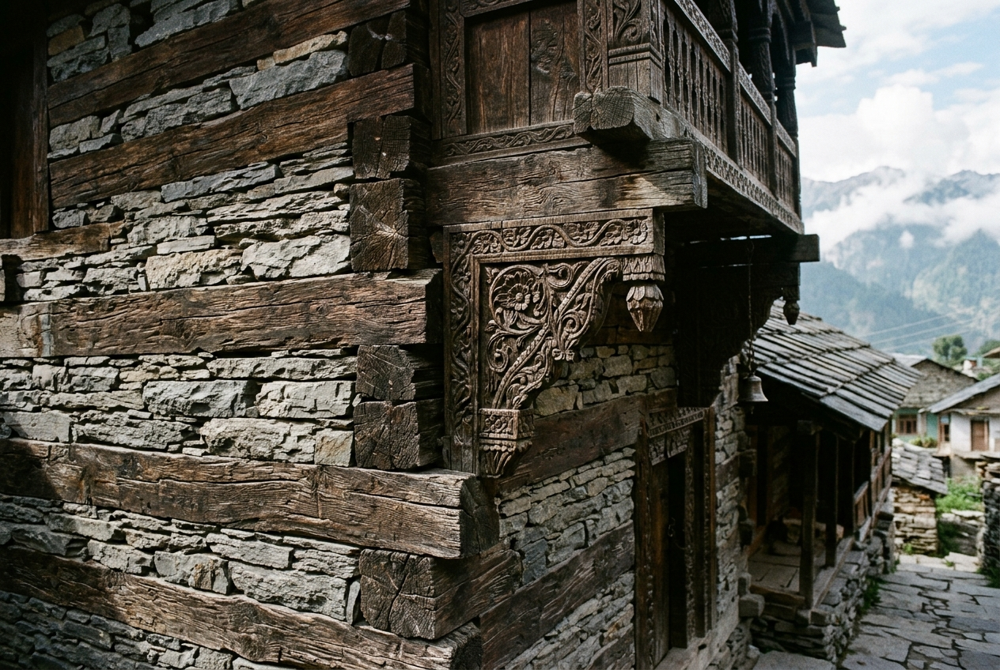

01 / Craftsmanship
Kath-Kuni Timber Architecture
Alternating bands of local cedar deodar beams and slate stones laid without mortar. This indigenous mountain engineering allows homes and temples to flex safely during Himalayan seismic tremors.